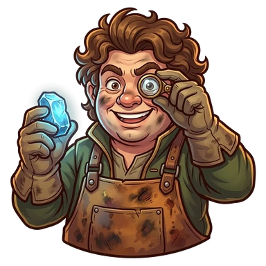

Slim Noggins

 Rogue
Rogue
Slim Noggins, Retired Hammer
After their quest: Slim Noggins, Starforger
He was a blacksmith. Life made him a rogue. Rare metals still call to him.
Ability
+5% chance to find an Amulet
That's the value at Lv 10: at Lv 1 it's half and it grows every level.
How to get them
Shows up as a recruit candidate at the Inn.
Quest
Slim and the metal that fell from the sky · Ashen Maw
How it ends · Show spoiler
Slim found metal fallen from a star and forged it next to Ignarok. The dragon billed him for the heat.
Party names
Show spoiler
- Hoarders Anonymous: Lavek + Slim Noggins
- Metal Collectors: Slim Noggins + Tink Silvabajo
- Ignarok's Debtors: Slim Noggins + Tink Silvabajo + Ragnuk
Chronicles
They unlock in-game as they level up. Each gives 1 Rune the first time you read it.
Chapter 1 (Lv 1) · Show spoiler
Retired hammer
Slim Noggins was a blacksmith, and a good one. One day a dwarf in a pink silk tunic walked into his workshop and bought the whole forge, anvil included, paying with a bag of gold. The gold was fake. The dwarf's name was Malamar. Slim was left with no hammer, no workshop and plenty of rage. With nothing to forge, he learned to pick locks. Turns out he was very good at it. Life made him a rogue, but his heart stayed by the forge.
Chapter 2 (Lv 5) · Show spoiler
A smith's ear
Slim can tell any metal by its sound. He taps it with a fingernail and tells you where it came from, who forged it and how much you were overcharged. That's how he opens locks: he doesn't force them, he listens to them. He's also unbearable at dinner. He looked at TomTom's cutlery and said "low-grade steel." TomTom now eats with his hands, and Slim brings his own cutlery everywhere, in a velvet case.
Chapter 3 (after their quest) · Show spoiler
The metal that fell from the sky
One night, Slim saw a star fall behind the Ashen Maw. By morning he was there, facing a metal he had never heard before: it rang like a bell underwater. There was no forge nearby, so he used the biggest one he could find: Ignarok's breath. He forged it right next to the dragon, who billed him for the heat. It was worth it. Since that day he is no longer the Retired Hammer: he is Slim Noggins, Starforger.
Chapter 4 (Lv 15) · Show spoiler
A visit to the forge
Every now and then Slim drops by your forge. He taps the anvil, listens, wrinkles his nose and says "acceptable." It's the nicest thing he has said to anyone in years. On expeditions, while the others fight, he checks every stone and every buckle in case there's an interesting metal. That's why, when Slim goes, more Amulets turn up: it isn't luck, he hears what everyone else steps on.
Chapter 5 (Lv 20) · Show spoiler
A ring for everyone
Slim still dreams of reopening his workshop. Someday. And of finding Malamar, who is still selling things in his mines in the same pink tunic. Also someday. Meanwhile, with the leftover star metal, he forged a ring for everyone in the party. He made Kupgush three, because one wouldn't fit. When you tap them, they all ring the same. Slim says that's the sound of a good alloy. The others know it's something else.
Their player
This character is played by a real player from the tabletop RPG campaign that inspired the game.